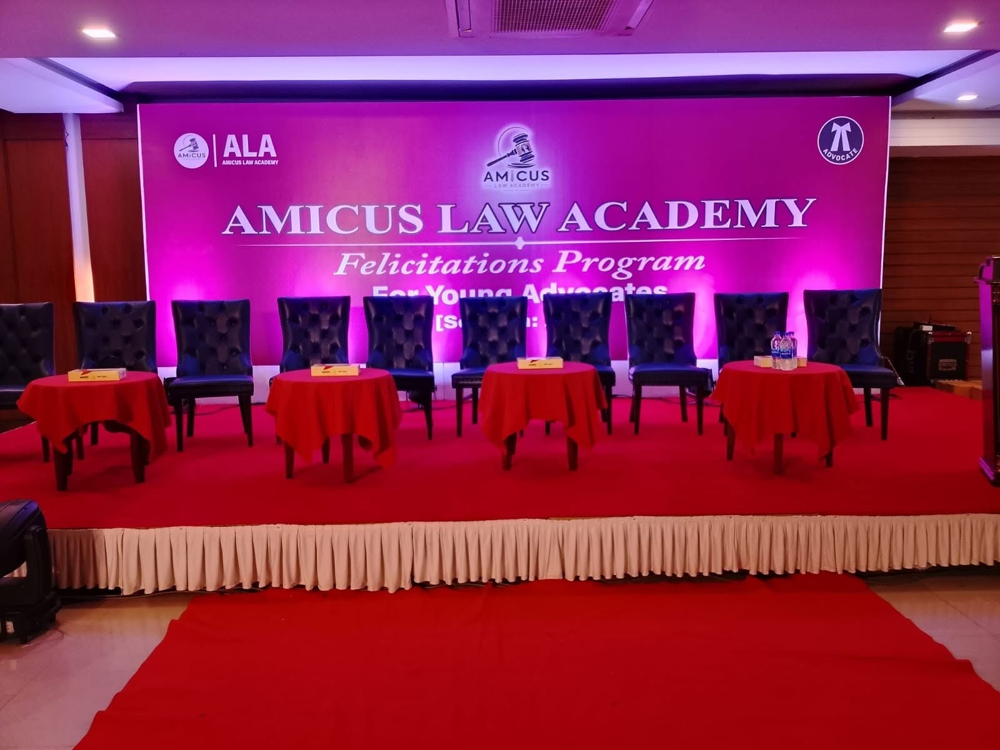

Corporate — Signature Project
Amicus Law Academy Felicitations Program 2026: A Signature Event by Dreamweaver Events
https://amicuslawacademy.com.bd
Every successful event begins with an idea, but turning that idea into a memorable experience requires much more than simply arranging a venue. It requires creative planning, technical expertise, careful execution, attention to detail, and the ability to understand what the occasion truly represents. For the Amicus Law Academy Felicitations Program for Young Advocates 2026, Dreamweaver Events had the privilege of transforming a banquet hall into an elegant and professional celebration space designed to recognize the achievements of the next generation of legal professionals.
The felicitation program was more than a formal gathering. It represented a significant milestone for young advocates who had worked hard to establish themselves in the legal profession. It was a moment of recognition, pride, and celebration shared by advocates, mentors, families, colleagues, and distinguished guests. Because of this, the environment surrounding the event needed to reflect the importance of the occasion. Dreamweaver Events approached the project intending to create a venue that felt prestigious, visually engaging, welcoming, and worthy of celebrating professional achievement.
As an experienced event management and event production company, Dreamweaver Events understands that an event environment plays a major role in how guests experience an occasion. The stage, entrance, branding, decorative elements, photography areas, and overall venue presentation all contribute to the emotional character of an event. For Amicus Law Academy, these elements were carefully brought together to create a unified and memorable event experience.
Transforming the Venue into an Event Experience
An ordinary banquet hall can serve many purposes, but a professionally designed event space can create a completely different atmosphere. For the Amicus Law Academy Felicitations Program, Dreamweaver Events focused on transforming the venue from a standard function space into a setting that reflected celebration, achievement, and professionalism.
The transformation was achieved through a combination of custom fabrication, stage design, event decoration, entrance treatment, and visual detailing. Instead of filling the venue with unnecessary decorative elements, the production approach focused on establishing strong visual focal points. The main stage became the room’s centerpiece, while the red-carpet entrance created a formal first impression and the photo wall gave guests a dedicated space to capture memories.
Each element was planned to complement the others. The design language of the stage was reflected in the surrounding visual environment, allowing the venue to maintain a cohesive appearance rather than looking like a collection of unrelated decorative installations. This attention to visual consistency is a key principle of professional event design.
The Stage as the Visual Centerpiece
The stage is often the most important visual component of a formal event. It becomes the background for speeches, presentations, recognition ceremonies, official photographs, video coverage, and important announcements. For a felicitation program celebrating young advocates, the stage needed to feel authoritative while still maintaining a celebratory and contemporary appearance.
Dreamweaver Events developed a striking magenta stage backdrop that immediately established the visual identity of the central presentation area. The bold color provided the stage with a distinctive presence and created a strong photographic background for the program.
However, effective stage design is about much more than choosing an attractive color. The structure, dimensions, proportions, framing, surface treatment, and finishing all have a major influence on how the completed stage looks in person and on camera. The design therefore had to consider not only aesthetics but also the practical realities of venue dimensions, stage visibility, photography, lighting, and audience sightlines.
The result was a stage designed to command attention while maintaining the formal character expected from an event associated with legal education and professional recognition.
Custom Woodwork and Fabrication
One of the defining elements of this project was the use of custom woodwork and fabrication to bring the stage design to life. Temporary event structures may only remain in place for a limited period, but their quality remains visible throughout the entire event. Poor finishing, uneven panels, inaccurate alignment, or inconsistent surfaces can immediately affect the appearance of a professionally organized occasion.
For this reason, Dreamweaver Events placed strong emphasis on fabrication quality. The woodwork team worked carefully on the panels, frames, structural elements, and finishing details required for the stage and related installations. Every component needed to fit into the overall design while maintaining a refined and professional appearance.
Custom fabrication also provided greater control over the final result. Rather than relying solely on standard rental structures, the team could create elements that were tailored to the venue and the creative direction of the program. This allowed the event environment to feel purpose-built for the occasion.
For Dreamweaver Events, this level of craftsmanship represents an important part of professional event production. Whether the project involves a corporate conference, award ceremony, educational program, product launch, fashion show, or institutional celebration, well-executed fabrication can elevate the appearance of the entire venue.
Creating a Memorable Red-Carpet Arrival
The guest experience begins before the program officially starts. The moment attendees enter the venue, they begin forming an impression of the event. This makes the entrance one of the most important opportunities to establish the right atmosphere.
For the Amicus Law Academy Felicitations Program, Dreamweaver Events created an elegant red-carpet arrival experience that gave the occasion a formal and celebratory character. The red carpet created a clear arrival pathway while adding a sense of ceremony and importance to the event.
This detail was particularly appropriate for a program celebrating young legal professionals. A felicitation ceremony is fundamentally about recognition, and the arrival experience reinforced that feeling from the very beginning. Guests were welcomed into an environment that communicated that they were attending an important occasion rather than an ordinary gathering.
The entrance also contributed to the overall photography and event documentation. A thoughtfully designed arrival area gives photographers, videographers, organizers, and guests more opportunities to capture the atmosphere of the event.
Designing the Photo Wall
Photography has become an essential part of modern event experiences. Guests want to capture special moments, organizations want strong visual documentation, and brands increasingly want event environments that perform well across websites and social media platforms.
Recognizing this importance, Dreamweaver Events incorporated a dedicated photo wall into the event setup. The photo wall created a visually attractive space where young advocates, guests, organizers, and dignitaries could take individual and group photographs.
A photo wall is more than a decorative backdrop. It becomes part of the memory of the event. For individuals being recognized at a major professional milestone, photographs taken at the event can remain meaningful long after the ceremony has ended.
The photo wall also extended the event’s visual identity beyond the stage. While the stage served as the primary focal point for the official program, the photo wall created a more personal and interactive area where guests could engage with the event environment.
Designing for a Professional Audience
Every event has its own audience, and good event design should reflect that audience. A children’s event, a music festival, a fashion show, a corporate conference, and a professional felicitation ceremony all require different visual approaches.
The Amicus Law Academy event was designed for a professional and academic audience, which meant that the visual language needed to balance celebration with sophistication. The stage and decorative elements therefore avoided an overly casual treatment. Instead, the setup combined strong visual impact with structured design and refined finishing.
The magenta backdrop provided energy and distinction, while the organized stage structure, red-carpet entrance, and photo wall contributed to a polished overall appearance. Together, these elements created an environment that felt appropriate for young advocates beginning the next chapter of their careers.
The goal was not simply to make the venue look attractive. The objective was to create a setting that made the recipients feel recognized and gave their achievements the visual importance they deserved.
Attention to Detail in Event Production
Professional event production is often defined by details that guests may not consciously notice. A perfectly aligned panel, a clean finish, a well-positioned frame, or a carefully planned installation may seem minor individually, but together these details determine whether a setup feels professional.
For Dreamweaver Events, attention to detail is therefore an essential component of event execution. Every project requires coordination between creative planning, fabrication, logistics, venue limitations, installation requirements, and the needs of the client.
The Amicus Law Academy event was approached with the same level of care. The team considered how different elements would appear from the audience area, how they would work in photographs, how guests would move through the space, and how the various installations could work together as one coherent environment.
This type of planning is what transforms event decoration into professional event production.
From Concept to Physical Reality
Behind every finished event setup is a process of turning ideas into physical structures. A design concept may look simple in a presentation, but executing it successfully requires planning and coordination at every stage.
For the Amicus Law Academy Felicitations Program, Dreamweaver Events had to translate the creative vision into a functioning event environment. This included developing the stage structure, preparing fabrication elements, arranging decorative features, preparing the photo wall, establishing the red-carpet entrance, and ensuring that the completed setup worked effectively within the banquet hall.
Installation also required precision and efficiency. Event setups often have limited access to venues and must be completed within specific timeframes. The production team therefore needs to balance speed with quality while ensuring that the final result maintains a professional standard.
This ability to move from concept to execution is a key part of Dreamweaver Events’ approach to event management.
Why Custom Event Fabrication Creates a Difference
Standard event decoration can provide a functional solution, but custom fabrication creates an opportunity to develop something unique. When an event has a strong identity or carries special significance, a customized environment can make the occasion feel much more distinctive.
Custom stage fabrication allows designers to control dimensions, materials, shapes, textures, framing, and finishing. It also enables the production team to develop elements that respond directly to the venue rather than forcing a generic structure into an existing space.
For the Amicus Law Academy event, custom fabrication hel